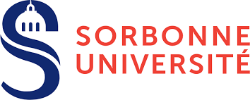
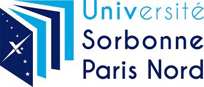
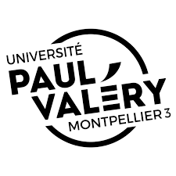

This project is led by Junia , and has Aéronef (concert venue in Lille, France) and Musique Pi Sourd (association promoting the practice of music by and for the Deaf) as partners.


The project started January 2020, running until June 2024. This project is led by LAM/d'Alembert (Paris, FR), and the partners are Junia (Lille, FR), IReMus (Paris, France), CRPMS (Paris, FR), and Praxiling (Montpellier, FR).


